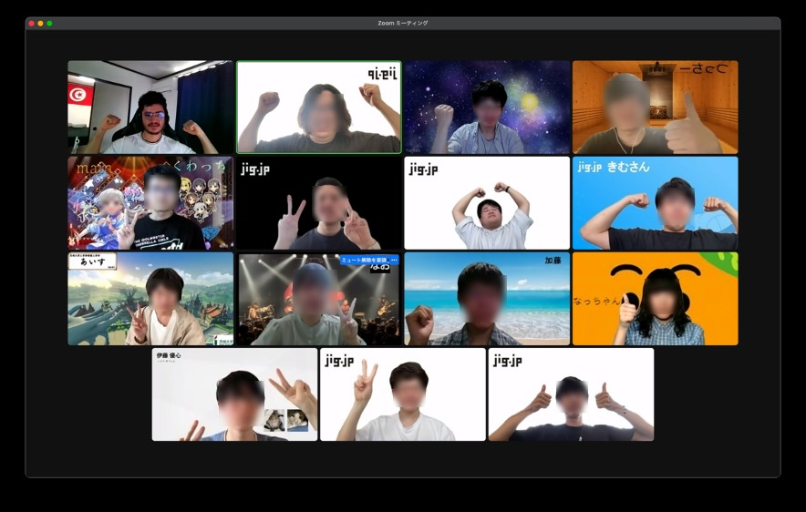
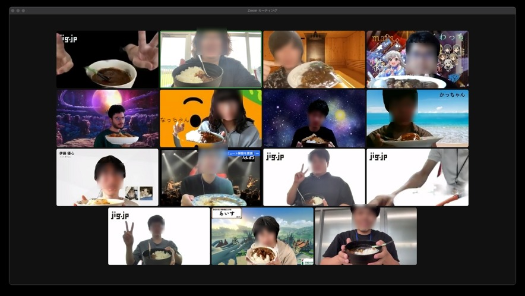
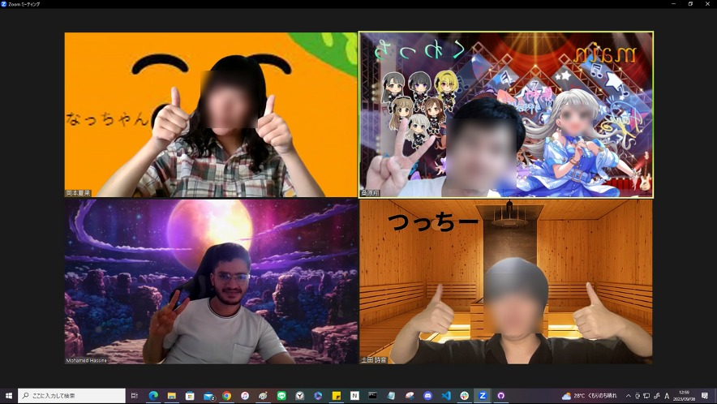

Jig.jp インターンシップの報告書
1 日目:
福野さんのウェルカムスピーチやアイスブレイク、自己紹介から始まりました。特にアイスブレイクのゲームは新鮮で楽しかったです。午後は、Git と JS の基本について学びました。Git は初めて使う人には難しそうに見えますが、使ってみるとその有用性がわかります。

2 日目:
HTML/CSS についての勉強会でした。私も以前から少し触れていたので、新しいことも多く学べました。
3 日目:
Deno、サーバー通信、API に関する深い勉強会でした。GET/POST の基本はしっかり身につけることができました。カレー会やオフィス見学も行い、社員の方々との交流も深めることができました。

4 日目:
DB に焦点を当て、SQL の勉強をしました。私は特に Deno との連携や MYSQL を使ったバックエンドの開発に関わりました。
5 日目以降:
インターンシップの後半は、実際の開発に取り組みました。私はバックエンド、特に MYSQL、JS、Deno を中心に取り組みました。チームでの開発はコミュニケーションが鍵となり、その重要性を再認識しました。
6 日目:
開発の一日目に入り、具体的なタスク分けと進行方針が確定しました。ふじいメンターの下、初めての開発タスクの割り振りが行われました。かっちゃんとつっちーがフロントエンドの部分を担当する中、私はバックエンド、特に MYSQL, JS, Deno に特化して取り組むこととなりました。バックエンドの基盤をしっかりと構築することで、フロントエンドとの連携をスムーズに進めることが目標とされました。この日からバックエンドに専念し、データベースの設計や API の構築を開始しました。
7 日目:
開発の進行に伴い、バックエンドの作業に集中しました。特に MYSQL を使用してのデータベース管理や、Deno でのサーバー構築に力を入れました。ふじいメンターと共に様々な課題をクリアしていきました。
8 日目:
チーム内でのコミュニケーションをさらに強化するための中間レビューが行われました。バックエンドの進捗についても報告し、全体の流れを把握しました。
9 日目:
開発が後半に入り、バックエンドの課題も増えてきました。MYSQL と JS、Deno を駆使して機能の実装を進めました。特にデータベースとの連携や API の設定に注力しました。
10 日目:
開発最終日。ラストスパートとして、バックエンドの微調整や最後のテストを行いました。成果を発表する発表会に向けて、最後の確認作業をしました。

このインターンシップは本当に素晴らしい経験となりました。新しい技術を学ぶだけでなく、チームとしての連携やコミュニケーションの大切さも学びました。この貴重な機会を与えていただいたすべての方々に心から感謝しています。今後もこの経験を活かし、さらに成長していきたいと思います。